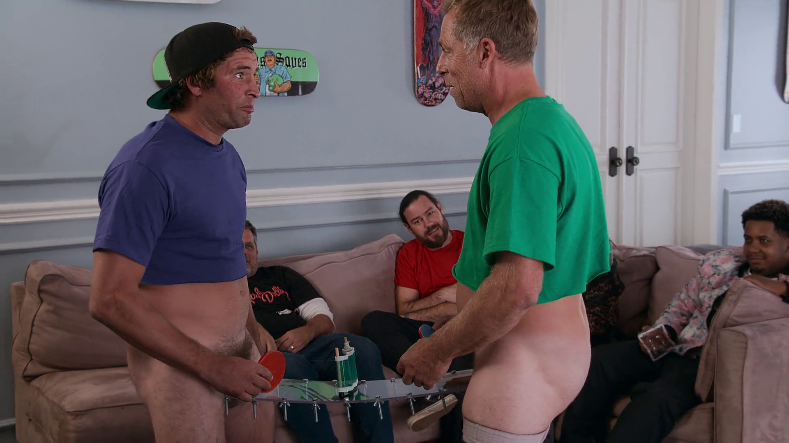

Video ID : 1 Format : AVC Format/Info : Advanced Video Codec Format profile : High@L4.1 Format settings : CABAC / 4 Ref Frames Format settings, CABAC : Yes Format settings, Reference frames : 4 frames Codec ID : avc1 Codec ID/Info : Advanced Video Coding Duration : 1 h 30 min Bit rate : 2 500 kb/s Width : 1 920 pixels Height : 1 080 pixels Display aspect ratio : 16:9 Frame rate mode : Constant Frame rate : 23.976 (23976/1000) FPS Color space : YUV Chroma subsampling : 4:2:0 Bit depth : 8 bits Scan type : Progressive Bits/(Pixel*Frame) : 0.050 Stream size : 1.58 GiB (92%) Writing library : x264 core 152 r2851M ba24899 Encoding settings : cabac=1 / ref=4 / deblock=1:-1:-1 / analyse=0x3:0x113 / me=umh / subme=9 / psy=1 / psy_rd=1.00:0.15 / mixed_ref=1 / me_range=24 / chroma_me=1 / trellis=2 / 8x8dct=1 / cqm=0 / deadzone=21,11 / fast_pskip=1 / chroma_qp_offset=-3 / threads=32 / lookahead_threads=4 / sliced_threads=0 / nr=0 / decimate=1 / interlaced=0 / bluray_compat=0 / constrained_intra=0 / bframes=3 / b_pyramid=2 / b_adapt=2 / b_bias=0 / direct=3 / weightb=1 / open_gop=0 / weightp=2 / keyint=250 / keyint_min=25 / scenecut=40 / intra_refresh=0 / rc_lookahead=50 / rc=2pass / mbtree=1 / bitrate=2500 / ratetol=1.0 / qcomp=0.60 / qpmin=0 / qpmax=69 / qpstep=4 / cplxblur=20.0 / qblur=0.5 / vbv_maxrate=31250 / vbv_bufsize=31250 / nal_hrd=none / filler=0 / ip_ratio=1.40 / aq=3:1.00 Encoded date : UTC 2022-05-20 08:53:44 Tagged date : UTC 2022-05-20 08:53:44 Codec configuration box : avcC Audio ID : 2 Format : AAC LC Format/Info : Advanced Audio Codec Low Complexity Codec ID : mp4a-40-2 Duration : 1 h 30 min Duration_LastFrame : -11 ms Bit rate mode : Constant Bit rate : 224 kb/s Channel(s) : 6 channels Channel layout : C L R Ls Rs LFE Sampling rate : 48.0 kHz Frame rate : 46.875 FPS (1024 SPF) Compression mode : Lossy Stream size : 145 MiB (8%) Language : English Default : Yes Alternate group : 1 Encoded date : UTC 2022-05-20 08:53:44 Tagged date : UTC 2022-05-20 08:53:44